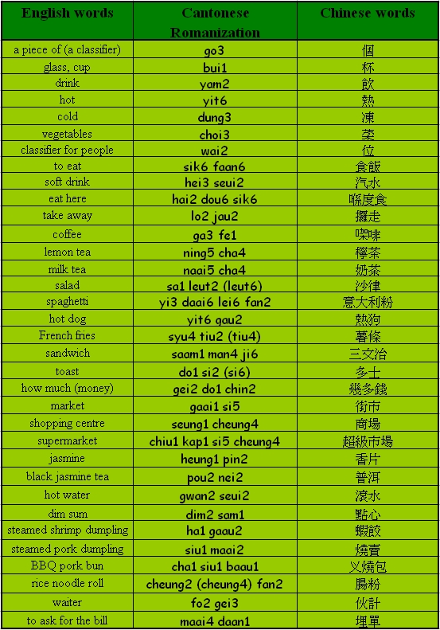

Unit 8 Shopping, Food and Drink
Unit 8 Shopping, Food and Drink 
Objectives
- To recognize and pronounce Cantonese words with the initials [d], [n], [s], [y], [ch];
- To recognize and pronounce Cantonese words with the finals [a], [ai], [au], [aai], [ei];
- To learn basic Cantonese food and drink vocabulary.
Warm up Work together.
- Can you name a place in HKIED?
- Do you know where the ‘tou4 syu1 gun2’ is? Have you been there before?
Vocabularies

Sentence structure
Auxiliary – AV (S AV V O)
Common auxiliary verbs: seung2 (want), ho2 yi5 (can), jung1 yi3 (like), yiu3 (need), sik1 (know).
I want to have afternoon tea at the canteen.
我想去canteen食下午茶。
[ngo5 seung2 heui3 canteen sik6 ha6 ng5 cha4.]
I want to eat steamed shrimp dumplings, rice noodle rolls, steamed pork dumplings and BBQ pork buns.
我想食蝦餃、腸粉、燒賣、叉燒包。
[ngo5 seung2 sik6 ha1 gaau2, cheung2 fan2, siu1 maai2, cha1 siu1 baau1.]
Conversation Practice with a partner.
Scene I: Sally and Linda are going to eat in the canteen.
Sally: Where shall we go for afternoon tea?
去邊度食下午茶好呀？
[heui3 bin1 dou6 sik6 ha6 ng5 cha4 hou2 a3?]
Linda: Ground floor canteen.
地下 canteen 吖。
[dei6 ha2 canteen a1.]
Order food and drink in a canteen
Sally: One sandwich and a cold lemon tea, please.
一份三文治、一杯凍檸茶吖，唔該。
[yat1 fan6 saam1 man4 ji6, yat1 bui1 dung3 ning5 cha4 a1, m4 goi1.]
Cashier: Eat here or take away?
喺度食定攞走呀？
[hai2 dou6 sik6 ding6 lo2 jau2 a3?]
Sally: Eat here.
喺度食。
[hai2 dou6 sik6.]
Scene II: Sally and Linda are going to have meals in a Chinese restaurant.
Waiter: How many people do you have?
幾多位呀？
[gei2 do1 wai2 a3?]
Sally: Two, please.
唔該兩位。
[ng4 goi1 leung5 wai2.]
Waiter: Which tea do you want to drink?
飲咩茶呀？
[yam2 me1 cha4 a3?]
Sally: Black Jasmine tea please.
普洱吖，唔該。
[pou2 nei2 a1, ng4 goi1.]
Linda: What kinds of dim sum do you want to have?
我哋食咩點心呀？
[ngo5 dei6 sik6 me1 dim2 sam1 a3?]
Sally: I want to eat steamed shrimp dumpling, rice noodle roll, steamed pork dumpling and BBQ pork bun..
我想食蝦餃、腸粉、燒賣、叉燒包。
[ngo5 seung2 sik6 ha1 gaau2, cheung4 fan2, siu1 maai2, cha1 siu1 baau1.
Quiz
- Can you say the following words in Cantonese – ‘take away’?
- Can you say the following words in Cantonese – ‘maai4 daan1’?
- Do you know how to order food and drink in a restaurant?